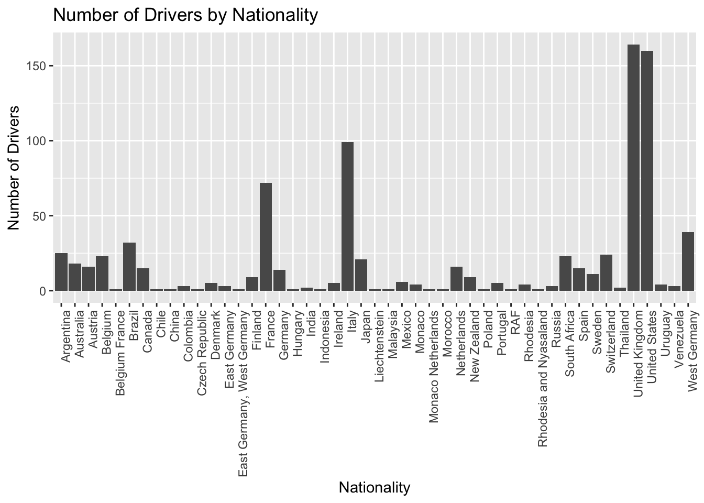
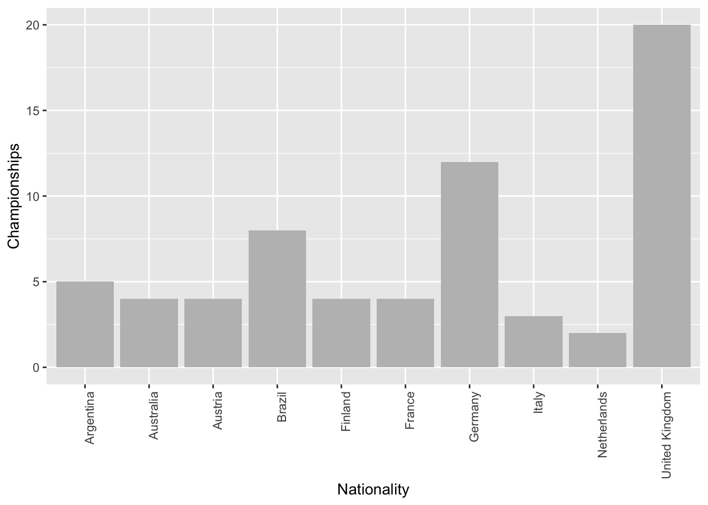

library(tidyverse)
library(ggplot2)
knitr::opts_chunk$set(echo = TRUE)Final Project Assignment 1: Shantanu Patil
final_Project_assignment_1
final_project_data_description
Formula 1 Drivers Performance Insights
Part 1. Introduction
Known for its high-speed action and intense competition, Formula 1 is a thrilling motorsport that captivates fans worldwide. A driver’s performance is influenced by a variety of factors, which is essential for fans and teams alike. I am a very big fan of F-1 sport and thought it would be great to analyze the dataset of the sport I love.
This project will analyze a comprehensive dataset of Formula 1 drivers, focusing on their nationality, experience, and performance metrics. It is our objective to uncover patterns and trends that can help us better understand the factors influencing success in this highly competitive sport. The distribution of drivers by nationality, the relationship between championships and experience, and performance comparisons of legendary drivers will be explored through visualizations
# Read the dataset
f1_data <- read.csv("Shantanu_FinalProjectData/F1DriversDataset.csv")
# Display the first few lines of the dataset
head(f1_data)Part 2. Describe the data set(s)
Data on Formula 1 drivers is sourced from Wikipedia and is a comprehensive collection of information about all Formula 1 drivers. The dataset is up-to-date as of the 2023 Bahrain Grand Prix.
https://en.wikipedia.org/wiki/List_of_Formula_One_drivers
Drivers’ careers and performance are explored in this dataset, including the following data features:
# Get dimensions of the dataset
dim(f1_data)[1] 868 22# Get the column names of the dataset
colnames(f1_data) [1] "Driver" "Nationality" "Seasons"
[4] "Championships" "Race_Entries" "Race_Starts"
[7] "Pole_Positions" "Race_Wins" "Podiums"
[10] "Fastest_Laps" "Points" "Active"
[13] "Championship.Years" "Decade" "Pole_Rate"
[16] "Start_Rate" "Win_Rate" "Podium_Rate"
[19] "FastLap_Rate" "Points_Per_Entry" "Years_Active"
[22] "Champion" The Formula 1 Drivers dataset offers a thorough overview of the drivers’ drivers’ career and racing performances.
It contains crucial details including the driver’s full name, country, and the Formula 1 racing seasons they participated in. Key performance indicators like the number of World Drivers’ Championships won, race entries, race starts, pole positions, race victories, podium places, fastest laps, and the sum of championship points earned up over the course of their careers are also included in the dataset.
This information enables a deeper understanding of the factors contributing to a driver’s success and helps uncover trends and aids in insights regarding their performance in this highly competitive motorsport.
Lets create a bar chart for the number of drivers by nationality.
# Bar chart for the number of drivers by nationality
ggplot(f1_data, aes(x = Nationality)) +
geom_bar() +
theme(axis.text.x = element_text(angle = 90, hjust = 1)) +
labs(title = "Number of Drivers by Nationality",
x = "Nationality",
y = "Number of Drivers")
To show the top 10 countries and their matching number of titles, I used ggplot2 to build a bar plot. The total number of championships won by drivers of a given nationality is shown on the y-axis, which is represented by the nationality’s x-axis.
# Load required libraries
library(dplyr)
# Sum championships by nationality
driver_champ <- f1_data %>%
group_by(Nationality) %>%
summarise(Championships = sum(Championships, na.rm = TRUE))
# Sort and select the top 10 nationalities
driver_champ_top10 <- driver_champ %>%
arrange(desc(Championships)) %>%
slice_head(n = 10)
# Create the bar plot
ggplot(driver_champ_top10, aes(x = Nationality, y = Championships)) +
geom_bar(stat = "identity", fill = "gray") +
theme(axis.text.x = element_text(angle = 90, hjust = 1)) +
labs(x = "Nationality", y = "Championships")
3. The Tentative Plan for Visualization
I will explore and develop a number of visualizations that concentrate on the following elements in order to effectively analyze the dataset and find interesting trends and relationships:
Drivers by Nationality and Decade: Investigate the patterns in the nationalities of drivers through decades, paying particular attention to the top nations and how they have changed over time.
Season Years vs Championships Count: Examine the connection between a driver’s number of championship wins and the amount of years they have been competing.
Correlation between Pole Positions and Race Wins: Examine the relationship between a driver’s number of pole positions and race victories, focusing on those with the most pole positions.
Hamilton, Schumacher, Vettel, and Senna Performance Comparison: Focusing on pole positions, victories, podium finishes, and fastest laps, compare the performance metrics of renowned drivers Lewis Hamilton, Michael Schumacher, Sebastian Vettel, and Ayrton Senna.
I will use these visuals as a starting point to understand the dataset and the performance of the drivers. As I dive more into the data, we might find more patterns and connections that can be looked into and visualized. My ultimate objective is to gather insightful knowledge about the Formula 1 racing industry, comprehend the elements that lead to a driver’s performance, and provide information that will be helpful to teams, drivers, and spectators alike.